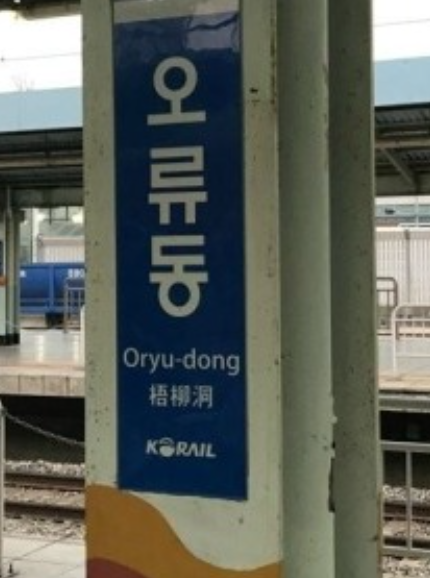

<!DOCTYPE html>
<html oncontextmenu="return false" ondragstart="return false" onselectstart="return false">
<head>
  <meta charset="UTF-8">
  <meta name="viewport" content="width=device-width, initial-scale=1.0">
  <title>쌍용교육센터 학생자격(필기)</title>

  <link rel="stylesheet" type="text/css" href="style.css">
  <script type="text/javascript">

    window.onload = function(){


      const timer_div = document.querySelector("header");
      let time=600;
      
      //타이머 함수 만들기
      const timer = function() {
        let html="<h1 id='subject'>쌍용교육센터 학생자격(필기)</h1>";
        if(time<0){ // 타임이 0보다 작게된다면
          alert("제한시간 초과로 제출합니다!")
          clearInterval(setTimer);
          btnSubmit.disabled =true;
          check();
        }
        else{
          let minute = parseInt(time/60);
          minute = (minute+"").length<2? "0"+minute : minute; //삼항연산자로 분 자리맞춰주기
          let second = time%60;
          second = (second+"").length<2? "0"+second : second; //삼항연산자로 초 자리맞춰주기
          
          if(time>60){  //남은시간이 1분이상일 경우
            html += `<div id="timer">남은시간 : ${minute} : ${second}</div>`;
          }
          else{ //남은시간이 1분이하일 경우
            html += `<div id="timer" style="color:red;">남은시간 : ${minute} : ${second}</div>`;
          }
          timer_div.innerHTML = html;

          time--;
        }
      }// end of timer-----
      const setTimer = setInterval(timer,1000); //타이머 호출

      const arr_quizData = [
        {
          question: "1. 다음중 쌍용강북교육센터에서 가장 잘생긴 사람으로 올바른것은?",
          answers :{
            1 : "장진영",
            2 : "최현우",
            3 : "조상운",
            4 : "황광빈"
          },
          correct : 2 
        },
        {
          question: "2. 다음중 쌍용강북교육센터의 주소로 올바른것은?",
          answers : {
            1 : "마포구 <br>월드컵북로 21",
            2 : "마포구 <br>월드컵남로 21-1",
            3 : "마포구 <br>월드컵북로 21-1",
            4 : "마포구 <br>월드컵북로 21-2"
          },
          correct : 1
        },
        {
          question : "3. 다음중 쌍용강북교육센터에서 가장 뛰어난 스타강사로 올바른것은?",
          answers  : { 
              1 : "동영학",
              2 : "서영학",
              3 : "남영학",
              4 : "북영학",
          },
          correct : 2
        },
        {
          question: "4. 다음중 쌍용강북교육센터의 사진으로 올바른것은?",
          answers :{
            1 : `<div id="quiz_img"></div>`,
            2 : `<div id="quiz_img"></div>`,
            3 : `<div id="quiz_img"></div>`,
            4 : `<div id="quiz_img"></div>`
          },
          correct : 4
        },
        {
          question: "5. 다음중 하루에 3번 출석체크하는시간으로 올바른것은?",
          answers :{
            1 : "9시,2시,5시",
            2 : "9시,12시,5시",
            3 : "8시,2시,6시",
            4 : "9시,2시,6시"
          },
          correct : 4 
        },
        {
          question: "6. 다음중 수업시간 가장 많이 언급된 인물로 올바른것은?",
          answers :{
            1 : "엄정화",
            2 : "차은우",
            3 : "강감찬",
            4 : "조하솔",
            5 : "이순신"
          },
          correct : 5 
        },
        {
          question: "7. 다음중 쌍용강북교육센터에서 가장 가까운 지하철역의 사진으로 알맞은것을 고르시오?",
          answers :{
            1 : `<div id="quiz_img"></div>`,
            2 : `<div id="quiz_img"></div>`,
            3 : `<div id="quiz_img"></div>`,
            4 : `<div id="quiz_img"></div>`
          },
          correct : 2 
        },
        {
          question: "8. 다음중 수업중에 당황스러운 순간으로 옳지 않은것은?",
          answers :{
            1 : "중요한 내용 수업하는데 화장실이 급할 때",
            2 : "에러나는데 <br>강사님의 진도가 <br>미친듯이 빠를 때",
            3 : "퀴즈를 내주셨는데 <br>어떻게 풀어야할지 <br>감조차 오지 않을 때",
            4 : "오늘따라 수업내용이 머리에 잘 들어올 때"
          },
          correct : 4 
        },
        {
          question: "9. 다음중 쌍용강북교육센터의 휴게실이 있는곳의 층수로 옳은것은?",
          answers :{
            1 : "1층",
            2 : "2층",
            3 : "3층",
            4 : "4층"
          },
          correct : 3 
        },
        {
          question: "10. 다음중 강의실 내 좌석의 갯수로 올바른것은?",
          answers :{
            1 : "19",
            2 : "20",
            3 : "21",
            4 : "22"
          },
          correct : 3 
        },
        {
          question: "11. 다음중 서영학 강사님의 사진으로 올바른것은?",
          answers :{
            1 : `<div id="quiz_img"></div>`,
            2 : `<div id="quiz_img"></div>`,
            3 : `<div id="quiz_img"></div>`,
            4 : `<div id="quiz_img"></div>`
          },
          correct : 3 
        },
        {
          question: "12. 다음중 현재까지 배운 프로그래밍 언어에 해당하지 않는것은?",
          answers :{
            1 : "Java",
            2 : "Javascript",
            3 : "Python",
            4 : "PL/SQL"
          },
          correct : 3 
        },
        {
          question: "13. 다음중 현재 본인의 담당 매니저로 알맞은 사람은?",
          answers :{
            1 : "강태림 매니저님",
            2 : "이순신 매니저님",
            3 : "엄정화 매니저님",
            4 : "강감찬 매니저님"
          },
          correct : 1 
        },
        {
          question: "14. 다음중 컴포즈커피의 아메리카노 가격으로 옳은것은?",
          answers :{
            1 : "1000원",
            2 : "1500원",
            3 : "2000원",
            4 : "2500원"
          },
          correct : 2
        },
        {
          question: "15. 다음중 쌍용강북교육센터의 수업시간으로 옳은것은?",
          answers :{
            1 : "20분",
            2 : "30분",
            3 : "40분",
            4 : "50분"
          },
          correct : 4 
        },
        {
          question: "16. 다음중 쌍용강북교육센터의 쉬는시간으로 옳은것은?",
          answers :{
            1 : "7분",
            2 : "8분",
            3 : "9분",
            4 : "10분"
          },
          correct : 4 
        },
        {
          question: "17. 다음중 미니프로젝트때 조장을 맡았던 사람으로 올바른것은?",
          answers :{
            1 : "장진영",
            2 : "조상운",
            3 : "임선우",
            4 : "김민수"
          },
          correct : 1 
        },
        {
          question: "18. 다음중 쌍용강북교육센터의 점심시간 시작시간으로 올바른것은? ",
          answers :{
            1 : "12시",
            2 : "12시 30분",
            3 : "12시 50분",
            4 : "1시"
          },
          correct : 3 
        },
        {
          question: "19. 다음중 정답을 고르세요",
          answers :{
            1 : "오답",
            2 : "오답",
            3 : "정답",
            4 : "오답"
          },
          correct : 3 
        },
        {
          question: "20. 다음중 만들기 귀찮은데 아무거나 찍어서 맞추세요",
          answers :{
            1 : "정답이",
            2 : "뭘까요",
            3 : "알아맞춰",
            4 : "보세요"
          },
          correct : 4 
        },
      ];//end of const arr_quizData;


      const quiz_display1 = document.querySelector("div#Main > div#section > div#article1");  //문제들이 들어갈 공간 잡기
      const quiz_display2 = document.querySelector("div#Main > div#section > div#article2");  //문제들이 들어갈 공간 잡기
      // 퀴즈 문항을 html 로 만들어서 article1,2 안에 넣기
      let html = ``;
      let quiz_cnt = 1;
      arr_quizData.forEach((item,idx) => {
        html += `<div id="problem" class="q${idx}">`;
        html += `<p id="q${idx}">${item.question}</p>`;
        let num=``;
        let cnt=1;
        let second_html ="";
        html += `<table id="answers">`;
        html +=`<tr>`;
        for(let key in item.answers) {
            html +=`<td>`;
          switch (cnt) {
            case 1:
              num="①";
              break;
            case 2:
              num="②";
              break;
            case 3:
              num="③";
              break;
            case 4:
              num="④";
              break;
            case 5:
              num="⑤";
              break;
          }//end of switch-case-------
          if(cnt<=2){ //문항 2번 전까진 바로담기
            html += `<label for="q${idx}r${cnt}">${num}${item.answers[key]}</label><input type="radio" id="q${idx}r${cnt}" name="q${idx}" value="${key}"/>`;
            html +=`</td>`;
          }//end of if---
          else{
            second_html += `<td><label for="q${idx}r${cnt}">${num}${item.answers[key]}</label><input type="radio" id="q${idx}r${cnt}" name="q${idx}" value="${key}"/>
                            </td>`;
          }
          cnt++;
        }//end of for----
        html += `</tr>`;
        html += `<tr>`;
        html += `${second_html}`; //1,2번 제외하면 아래에 출력하도록 하기
        html += `</tr>`;
        html += `</table>`;
        html += `</div>`;

        if(quiz_cnt<=(arr_quizData.length)/2){ //문제 절반은 왼쪽에 넣기위한 조건
          quiz_display1.innerHTML += html;
          html="";
        }//end of if--
        quiz_cnt++;
      })//end of arr_quizData.forEach----
      quiz_display2.innerHTML = html; //나머지 문제 절반은 오른쪽 section에 찍기


      //문제 수 만큼 답안지 list 작성하기
      const answer_view = document.querySelector("div#Main > aside > div#answer_bar > div#answer_view");
      html=``;
      arr_quizData.forEach((item,idx) => {
        html += `<div id='quiz_num'>[${idx+1}번]</div>`
        html += `<div id="answer_block">`;
          html += `<div id="answer_num">`;
          let cnt=1;
          num=``;
          for(let key in item.answers){ //문항 수 만큼 숫자쓰기
            switch (cnt) {
              case 1:
                num="①";
                break;
              case 2:
                num="②";
                break;
              case 3:
                num="③";
                break;
              case 4:
                num="④";
                break;
              case 5:
                num="⑤";
                break;
            }
            html += `<label for="q${idx}r${cnt}">${num}</label>`;
            cnt++;
          }//end of for---
          html += `</div>`;
          html += `<div id='q${idx}' class="quiz_radio">`;
          for(let key in item.answers){  //문항 수 만큼 input태그쓰기
            html += `<span><input type="radio" id="q${idx}r${cnt}" name="answers${idx}" value="${key}"></span>`;
          }
        html +=   `</div>`;
        html += `</div>`;
        if((idx+1)%5==0){
          html += `<div id="five_border"></div>`;
        }
      })//end of arr_quizData.forEach----
      answer_view.innerHTML = html;


       // 문제지에 선택한 것 답안지에 체크하기
      const quiz_check_list = document.querySelectorAll("div#Main > div#section input[type='radio']");  //raido 이벤트소스잡기(배열로 받음)
      const quiz_check_list_length = quiz_check_list.length;    //배열의 길이 변수에 담기
      
      for(let i=0; i < quiz_check_list_length; i++){    //배열에 change 이벤트 추가하기
        quiz_check_list[i].addEventListener("change",e => {
          let parentNode = e.target.parentElement.parentElement.parentElement.parentElement.previousElementSibling; //이벤트 발생한곳의 문제번호를 알기위한 노드잡기
          let value = e.target.value;
          const answers_check = document.querySelector(`div#${parentNode.id} > span > input[value='${value}']`);
          answers_check.checked = true;
          cnt_quiz();
        });
      }//end of for(let i=0; i < quiz_check_list_length; i++)---

      // 답안지에 선택한 것 문제지에 체크하기
      const answers_check_list = document.querySelectorAll(`.quiz_radio > span > input[type ='radio']`);
      const answers_check_list_length = answers_check_list.length;

      for(let i=0; i < answers_check_list_length; i++){
        answers_check_list[i].addEventListener("change",e => {
          let parentNode = e.target.parentNode.parentNode;
          let value = e.target.value;
          let tr;
          let td;
          if(value<=2){ //문항수가 2번 이하일경후
            tr=1;
            td = value;
          }
          else{   //문항수가 2번이 넘어갈경우
            tr=2;
            td = value - 2;
          }
          const quiz_check = document.querySelector(`.${parentNode.id} > #answers > tbody > tr:nth-child(${tr}) > td:nth-child(${td}) > input[value='${value}']`);
          quiz_check.checked = true;
          cnt_quiz();
        });
      }//end of for-----


      // 풀지않은 문항 갯수 세는 함수 만들기
      function cnt_quiz(){
        let quiz_cnt=20;
        arr_quizData.forEach( (item, idx) => {
          let radio_length = document.getElementsByName(`q${idx}`).length; //라디오의 길이(for문 사용위한것)
          let isCheckAnswer = false;  //라디오 선택유무 검사용
          for(let i=0; i<radio_length; i++) {
            if( document.getElementsByName(`q${idx}`)[i].checked ) {
              isCheckAnswer = true;
              break;
            }
          }// end of for---------------------
          if(isCheckAnswer) { // 답을 선택한 경우
            quiz_cnt--;
          }
        });//end of arr_quizData.forEach( (item, idx)--
        const cnt_problem = document.querySelector("footer > div#cnt_problem");
        let html = `<span>남은 문항 수 : ${quiz_cnt}개</span>`;
        cnt_problem.innerHTML = html;
      }//end of function cnt_problem----
      cnt_quiz();
      


    
    // 제출하기 버튼 클릭시 할 함수 만들기
    const btnSubmit = document.querySelector("button#btnSubmit"); //제출버튼 소스잡기
    const handel_btnSubmit = () => {
      alert("제출이 완료되었습니다.");
      clearInterval(setTimer);
      timer_div.innerHTML = `<h1 id='subject'>쌍용교육센터 학생자격(필기)</h1><div id="timer">남은시간 : 00 : 00</div>`;
      btnSubmit.disabled= true; //"제출하기" 버튼 비활성화
      check(); //채점하는함수 호출
    };
    btnSubmit.addEventListener('click',handel_btnSubmit);


    // 채점하는 함수 만들기
      function check() {
        let answerCount = 0; // 정답개수 누적용
        const gradecard = document.querySelector(`div#gradecard > table#tbl_gradecard`);
        let html = ` <tr>
                        <th colspan="21">성적표</th>
                      </tr>
                      <tr id="quiz_num">
                        <td>번호</td>
                      </tr>
                      <tr id="answers">
                        <td>정답</td>
                      </tr>
                      <tr id="choice_answer">
                        <td>선택</td>
                      </tr>
                      <tr id="ox">
                        <td>채점</td>
                      </tr>`;
        gradecard.innerHTML = html;
        arr_quizData.forEach( (item, idx) => {
          let radio_length = document.getElementsByName(`q${idx}`).length; //라디오의 길이(for문 사용위한것)
          let isCheckAnswer = false;  //라디오 선택유무 검사용
          for(let i=0; i<radio_length; i++) {
            if( document.getElementsByName(`q${idx}`)[i].checked ) {
              isCheckAnswer = true;
              break;
            }
          }// end of for---------------------

          let userAnswer;
          if(isCheckAnswer) { // 답을 선택한 경우
            userAnswer = document.querySelector(`input[name="q${idx}"]:checked`).value; 
          }
          else { // 답을 선택하지 않은 경우 
            userAnswer = "X";
          }

          const quiz_num = document.querySelector(`table#tbl_gradecard > tbody > tr#quiz_num`);
          const answers = document.querySelector(`table#tbl_gradecard > tbody > tr#answers`);
          const choice_answer = document.querySelector(`table#tbl_gradecard > tbody > tr#choice_answer`);
          const ox = document.querySelector(`table#tbl_gradecard > tbody > tr#ox`);
          html = `<td>${idx+1}번</td>`;
          quiz_num.innerHTML += html;
          html = `<td>${item.correct}</td>`
          answers.innerHTML += html;
          html = `<td>${userAnswer}</td>`
          choice_answer.innerHTML += html;
          if(userAnswer == item.correct){ //정답을 맞춘 경우
            html = "<td style='color:blue';>O</td>";
            answerCount++;
          }
          else{ //틀렸다면
            html = "<td style='color:red';>X</td>";
          }
          ox.innerHTML += html;
        });//end of arr_quizData.forEach( (item, idx)---

        const result= document.getElementById("gradecard");
        html = `<div id="score">점수 : ${answerCount*5}점</div>`
        if(answerCount==20){  //만점일 경우
          html += `<div id="result" style="color : blue">만점입니다! 성실하게 학원을 다니셨군요!!</div>`;
        }
        else if(answerCount>12){  //합격일 경우
          html += `<div id="result" style="color : blue">합격입니다! 당신은 쌍용인의 자격이 있습니다.</div>`;
        }
        else{ //불합격일 경우
          html += `<div id="result" style="color : red">불합격입니다. 좀더 분발하셔야겠어요!!</div>`;
        }
        result.innerHTML += html;
        result.style.height = "400px";
      }//end of function check(){}--------------


    }//end of window.onload---
  </script>
</head>

<body>
  <div id="container">
    <!-- header -->
    <header>
    </header>
    <!-- Main -->
    <div id="Main">
      <div id="section">
        <div id="article1">
        </div>
        <div id="article2">
        </div>
      </div>
      <aside>
        <div id="answer_bar">
          <h1>답안지</h1>
          <div id="answer_view">
          </div>
        </div>
      </aside>
    </div>
    <!-- footer -->
    <footer>
      <div id="cnt_problem">
      </div>
      <div id="Answer">
        <button type="button" id="btnSubmit">제출하기</button>
      </div>
    </footer>

  </div>
  <!-- gradecard -->
    <div id="gradecard">
      <table id="tbl_gradecard">
      </table>
    </div>


</body>
</html>